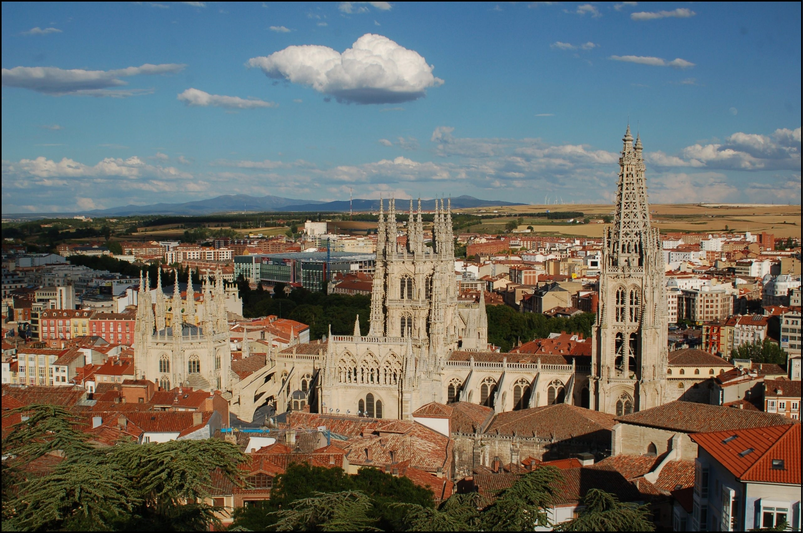
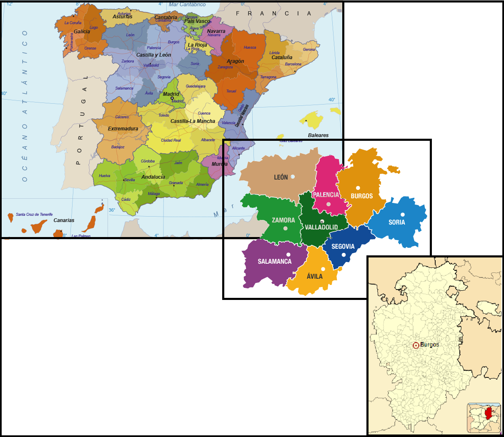
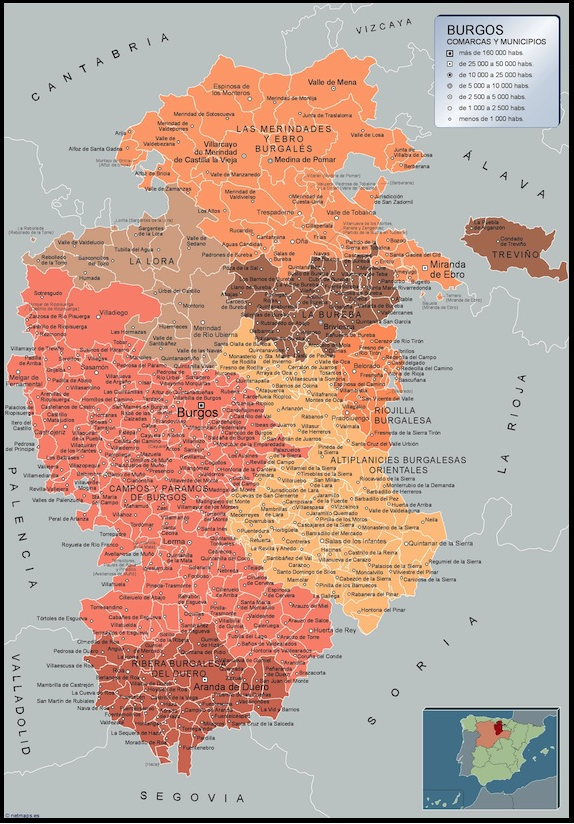

PROVINCIAS |
Localización Geografía Localidades Principales Historia Cultura Naturaleza Tradiciones Otros |
|---|---|
| Wikipedia Ávila Wikipedia León Wikipedia Palencia Wikipedia Salamanca Wikipedia Segovia Wikipedia Soria Wikipedia Valladolid Wikipedia Zamora |

Poesía "Lejano Clamor"De tus torres las cumbres afiladas desperezadas suben hacia el cielo, inmortal el silencio de su vuelo, las horas las contemplan asombradas. Inermes en su destino y calladas, soberbia su altura lejos del suelo, perdida luz del sueño en desvelo, pobladas de sombras estremecidas. En otro tiempo estas torres me vieron despertar a su luz enardecida, entre un clamor de campanas lejano. Fueron otros que de ellas me apartaron, de sus claridades de amanecida, de nada sirve que me queje en vano. Javier Quiñones Pozuelo Ir arriba Localización de Burgos La provincia de Burgos se encuentra en España, pertenece a la comunidad de Castilla y León. Ir arriba Geografía de BurgosIr arriba Localidades Principales de BurgosCitaremos algunas de las ciudades más representativas de cada comarca:
Ir arriba Historia de BurgosIr arriba Cultura de BurgosIncluyo un enlace a la página del ayuntamiento de Ávila para poder ver la guia de Cultura y Ocio disponible. Guía de Cultura y Ocio deL Ayuntamiento de Burgos Ir arriba Naturaleza de ÁvilaVídeo Naturaleza de Burgos Ir arriba Tradiciones de ÁvilaIr arriba Otras cosas de BurgosDejo en el enlace a varias pág. de interés sobre el turismo en Burgos y un video donde nos hace un breve recorrido por los monumentos más representativos, sus constumbres gastronomicas, etc. Guía de Cultura y Ocio deL Ayuntamiento de Ávila Guía de Cultura y Ocio deL Ayuntamiento de Ávila Ir arriba |